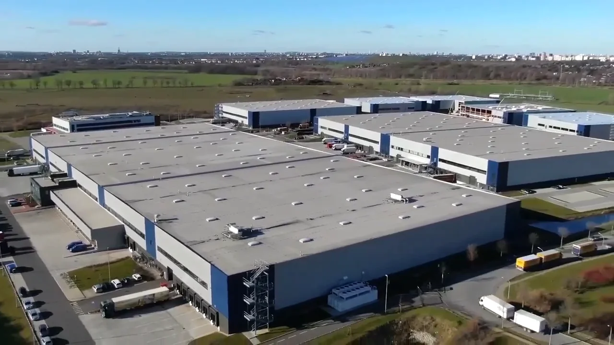

Andreas Nenninger
Regie, Photographie & Luftaufnahmen


Estatestar ist ein auf Architektur spezialisiertes PHOTO FILM 360 Studio.
In allen Immobilienbereichen setzen wir einzelne Liegenschaften bis zu großen Portfolios international in Szene.
Mit Helikopter und Drohne aus der Luft, als auch mit Kamera und 3D-Scanner vom Boden. Die Postproduktion erfolgt in unserem Studio und DIGITAL LAB in Berlin.
Für unsere Kunden produzieren wir beeindruckende PHOTOS, spannende FILME und effektvolle 360° virtuelle Touren.
WE MAKE YOUR ESTATE A STAR
Unsere Arbeiten


Virtuelle Rundgänge durch echte Immobilien.
 Neuer Wall 360
Neuer Wall 360Immobilien virtuell erleben.
Bewegen Sie sich durch unsere 360°-Rundgänge. Vom ersten Überblick bis zum Blick ins Detail – in Ihrem eigenen Tempo.
Rundgang öffnen Öffnet den externen 360°-Rundgang in einem neuen Tab.VIRTUAL STAGING
RENOVATION · CGI · 3D
Neue Leistungen in Vorbereitung.
Bestehende Bilder.
Neue Möglichkeiten.
Wir erweitern unser Digital Lab um KI-gestützte Visualisierungen für Immobilien. Diese drei Angebote sind in Vorbereitung.
Eine Idee besprechenAngebotsentwurf. Visualisierungen werden klar gekennzeichnet. Gestaltungsideen ersetzen keine Prüfung der baulichen Machbarkeit.
Die Menschen hinter ESTATESTAR.
Regie, Photographie & Luftaufnahmen
Kamera, Schnitt & Postproduktion
Produktionsplanung & Social Media
Webentwicklung & SEO
Ein Objekt. Eine Idee. Ein ganzes Portfolio.
Sprechen Sie mit uns.